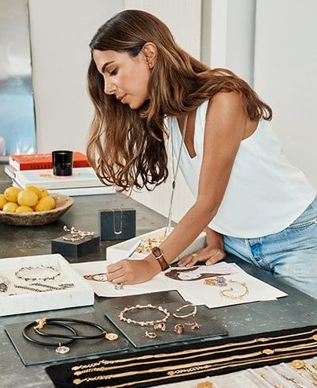

LUZIA - Donde la luz se vuelve joya
Descubrí joyas únicas, para mujeres únicas.
Ver ColecciónNuestras Colecciones
Anillos
Desde anillos extravagantes hasta anillos para todos los días.
Collares
Collares para complementar cualquier ocasión especial.

Aros
Modelos clásicos o modernos, pensados para acompañarte siempre.

Pulseras
Para agregar ese toque que te pertenece a tu look.
Conocenos
Soy Martina, fundadora de Luzia. Creo en las joyas que se sienten propias, esas que acompañan tu día y te hacen brillar sin esfuerzo. Desde chica me apasionaron los detalles y el poder que tienen las piezas únicas para expresar quiénes somos. En Luzia busco crear diseños que reflejen esa mezcla entre delicadeza, luz y personalidad. Cada joya está pensada para realzar lo que ya te hace especial: tu estilo, tu historia, tu forma de mirar el mundo. Trabajo con materiales de calidad y cuido cada paso del proceso, porque creo que el verdadero lujo está en lo hecho con dedicación y amor.
